Chương 5 — Một Số Ứng Dụng Lâm Sàng
Phân tích chuyển động được thực hiện cho các ứng dụng lâm sàng đòi hỏi một mô tả chi tiết về các cử động của một cá nhân cụ thể, nhằm hiểu rõ các cơ chế liên quan đến thực hiện một nhiệm vụ nhất định, sự suy giảm của các cơ chế này trong quá trình khởi phát hoặc tiến triển của một bệnh lý, hoặc thậm chí nhằm đánh giá một cách khách quan các hiệu quả của một phương pháp điều trị trị liệu (phẫu thuật, dùng thuốc hoặc phác đồ phục hồi chức năng).
Chương này trình bày, thông qua minh họa, một số nghiên cứu mà trong đó các hệ thống phân tích chuyển động đã được sử dụng trong bối cảnh lâm sàng: để đặc trưng hóa cách trẻ sơ sinh đi lại, đánh giá các cử động chức năng của chi trên, định lượng tính di động của cột sống cổ hoặc thậm chí phát hiện những thay đổi trong động học của khớp gối ở những bệnh nhân mắc bệnh viêm khớp. Trong mỗi trường hợp, phác đồ thực nghiệm và các đặc điểm riêng cho bối cảnh nghiên cứu đều được xác định, để người đọc có thể hiểu rõ đầy đủ những khó khăn trong việc kiểm soát một cách thích hợp việc sử dụng loại công cụ này trong bối cảnh lâm sàng.
5.1. Sự tiến hóa của các tham số cơ sinh học của dáng đi ở trẻ nhỏ, từ những bước đi đầu tiên đến 7 tuổi
Trong những năm đầu đi lại độc lập, một đứa trẻ thấy chiến lược đi lại của mình tiến hóa [HAL 06, STA 06, SUT 97]. Sự tiến hóa này đã được nghiên cứu rộng rãi trong tài liệu, đặc biệt thông qua các phép đo baropodometric [MÜL 12, ROS 13] hoặc các ghi nhận điện cơ đồ [TIR 13]. Xét về nghiên cứu các tham số động học và động lực học, các kết luận liên quan đến sự trưởng thành của dáng đi khác nhau tùy theo từng nghiên cứu, chủ yếu do tính không đồng nhất về số lượng trẻ tham gia, tuổi của chúng, việc có sử dụng các tham số không thứ nguyên hay không, hoặc thậm chí có xem xét đến tốc độ đi lại hay không [SCH 08]. Ví dụ, hình thái gập/duỗi của khớp gối ở trẻ 3 tuổi [CHE 06], 5 tuổi [OUN 91] hoặc 7 tuổi [CHE 08] được coi là tương tự như ở người lớn, tùy thuộc vào các tác giả.
Nghiên cứu được mô tả ở đây nhằm hiểu rõ hơn sự tiến hóa của các tham số cơ sinh học của dáng đi ở trẻ nhỏ. Nó tóm tắt một phần các nghiên cứu trong luận án tiến sĩ của William Samson [SAM 11, SAM 09, SAM 13] và sau đó là Angèle Van Hamme [VAN 14], từ sự hợp tác giữa Phòng thí nghiệm Cơ sinh học và Cơ học Va đập (LBMC), Ủy ban Chuyên môn Pháp về Phát triển Kinh tế cho các ngành da, giày dép, hàng da và găng tay (CTC) và các Bệnh viện Dân sự Lyon (HCL). Nó bao gồm việc xây dựng và phân tích một cơ sở dữ liệu lớn (hơn 100 trẻ được đưa vào) các tham số cơ sinh học không thứ nguyên của dáng đi ở trẻ em từ 1 đến 7 tuổi, có tính đến tốc độ đi lại.
5.1.1. Vật liệu và phương pháp
Các phép đo được thực hiện trên 103 trẻ em trong suốt quá trình phát triển của chúng: về lý thuyết, mỗi ba tháng, sáu tháng và một năm, tương ứng cho trẻ từ 1–2 tuổi, 2–3 tuổi và trên 3 tuổi. Các phép đo được thực hiện trong một hành lang đi lại được trang bị ba bệ lực (0.40 × 0.60 m – Bertec®, Bertec Corporation, Colombus, Hoa Kỳ – 1000 Hz) và một hệ thống phân tích chuyển động gồm tám máy ảnh (1.3 MPixels, Eagle® – Motion Analysis®, Motion Analysis Corporation, Santa Rosa, Hoa Kỳ).
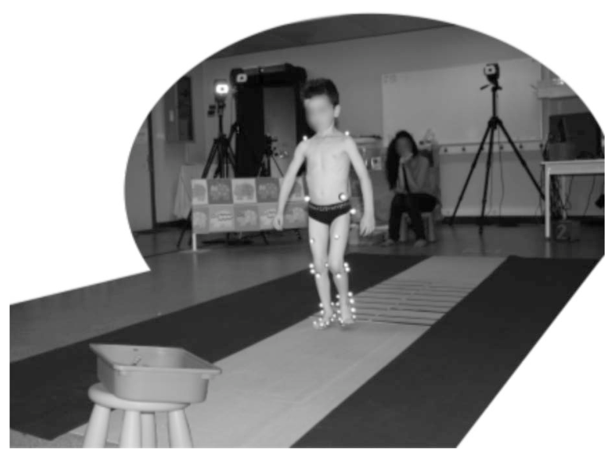
Từ các quỹ đạo của các điểm đánh dấu trên da và trọng tâm khớp hông được xác định bằng các hồi quy của Harrington và cộng sự [HAR 07], các góc khớp được tính toán bằng một chuỗi các phép quay quanh các trục động “ZXY” theo các khuyến nghị của Hội Cơ sinh học Quốc tế (ISB) [WU 02] (xem Chương 3). Tuy nhiên, đối với khớp cổ chân (bàn chân/ống chân), một chuỗi “ZYX” được xem là đại diện tốt nhất cho sự đảo–sấp (inversion-eversion) [BAK 03]. Mô-men xoắn khớp thuần, tức là mô-men kết quả từ tất cả các cấu trúc khớp (cơ, bề mặt khớp, dây chằng, v.v.) tác động lên một điểm trùng với tâm khớp, được tính từ biểu đồ vật thể tự do của mỗi đoạn khâu chi dưới bằng các phương trình của Newton–Euler [DUM 04], sau đó được biểu diễn trong hệ tọa độ khớp [DES 10]. Cho phép tính này, các tham số đoạn khâu cơ thể được xác định bằng các hồi quy của Jensen [JEN 89]. Công suất khớp sau đó được tính bằng tích vô hướng của mô-men xoắn khớp thuần và vận tốc góc khớp tương ứng. Tất cả các tham số này được chuyển đổi thành các đại lượng không thứ nguyên theo các khuyến nghị của Hof [HOF 96].
Để khắc phục hiệu ứng của tốc độ đi lại, khoảng các tốc độ không thứ nguyên của các phép đo hiện có [0.09– 0.71] được thu hẹp thành [0.35–0.49], chiếm xấp xỉ 51% con số ban đầu, sao cho không có sự khác biệt về tốc độ giữa các nhóm tuổi (kiểm định Kruskal–Wallis, p < 0.05).
5.1.2. Kết quả và thảo luận
Đối với tất cả các biến động học và động lực học, các đỉnh của đường cong tiến hóa và biên độ trong suốt chu kỳ dáng đi đã được phân tích (Hình 5.2 và 5.3). Các giá trị này được so sánh giữa các nhóm tuổi (cho tổng cộng 15 phép so sánh) để làm nổi bật những khác biệt liên quan đến tuổi: kiểm định Kruskal–Wallis (p < 0.05), và kiểm định post-hoc Kolmogorov–Smirnov với hiệu chỉnh Bonferroni, p < 0.003 (tức là p < 0.05/15).
Các kết quả cho thấy sự khác biệt đối với hầu hết các giá trị giữa nhóm tuổi nhỏ nhất (1–2 tuổi) và các nhóm khác. Đối với khớp cổ chân, ngoại trừ một số khác biệt về góc gập/duỗi và mô-men xoắn gập bàn chân, không có sự khác biệt đáng kể nào giữa nhóm 4 và các nhóm lớn tuổi nhất (trẻ trên 4 tuổi). Ngoài ra, không có sự khác biệt giữa các nhóm 5–6 và 6–7 tuổi đối với các biến liên quan đến khớp hông. Tuy nhiên, đối với khớp gối, nhiều khác biệt vẫn còn giữa các nhóm tuổi (kể cả trẻ lớn tuổi nhất), đặc biệt ở các đỉnh công suất trong pha đứng cuối, và các đỉnh góc dạng và góc xoay trong trong pha đưa chân lắc. Như vậy, các tuổi then chốt, tương ứng với độ tuổi mà các tham số cơ sinh học trở nên tương tự như ở người lớn, đã được làm nổi bật trong nghiên cứu này: 4 tuổi đối với cổ chân, 6 tuổi đối với hông và 7 tuổi đối với gối.
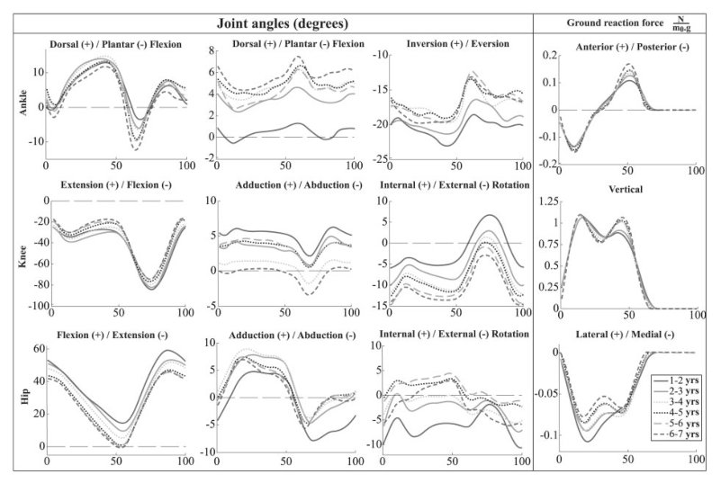
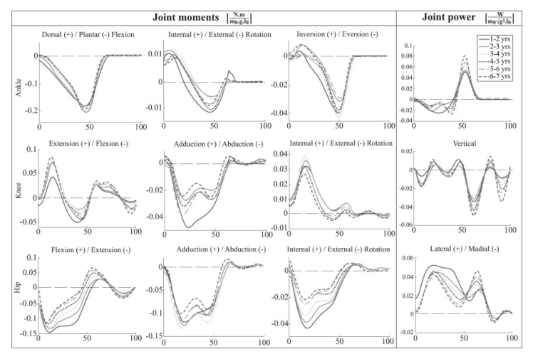
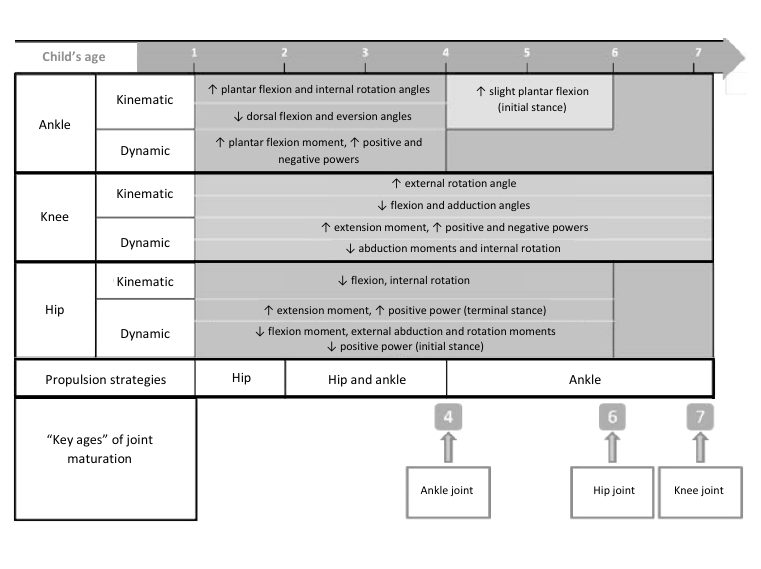
- Cổ chân
- Gối
- Hông
- Hông – Hông và cổ chân – Cổ chân
- Động học
- Động học
- Động học
- Động lực học
- Động lực học
- Động lực học
- Các chiến lược đẩy
- Tuổi của trẻ
- Các “tuổi then chốt” của sự trưởng thành khớp
- ↑ các góc gập bàn chân và xoay trong
- ↓ các góc gập mu và sấp (eversion)
- ↑ mô-men gập bàn chân, ↑ các công dương và âm
- ↑ góc xoay ngoài
- ↓ các góc gập và dạng
- ↑ mô-men duỗi, ↑ các công dương và âm
- ↓ các mô-men dạng và xoay trong
- ↓ gập, xoay trong
- ↑ mô-men duỗi, ↑ công dương (đứng cuối)
- ↓ mô-men gập, các mô-men dạng ngoài và xoay ngoài
- ↓ công dương (đứng đầu)
- ↑ gập bàn chân nhẹ
- (đứng đầu)
- Khớp cổ chân – Khớp hông – Khớp gối
Sự gia tăng các giá trị đỉnh của góc gập bàn chân, mô-men gập bàn chân và công dương tại cổ chân theo tuổi phù hợp với các kết quả được mô tả trong tài liệu [CHE 06, OEF 97].
Xét về việc sử dụng cơ sở dữ liệu này cho các ứng dụng lâm sàng, việc thiết lập các đường cong tham chiếu (tức là đã được trung bình hóa) theo từng loại tuổi dường như không khả thi, do hiệu ứng của tốc độ đi lại và hiệu ứng kết hợp của tuổi và tốc độ đi lại lên các tham số cơ sinh học khác nhau. Do đó, người ta đã quyết định đề xuất các vùng giá trị tham chiếu hoặc “các mục tiêu cần đạt được” thay thế, có thể được ước tính cho mỗi đối tượng và mỗi thử nghiệm (biết tuổi, chiều dài chi dưới và tốc độ đi lại) và cho phép trực quan hóa các độ lệch trên đường cong của một tham số cơ sinh học so với tham chiếu khỏe mạnh.
Các hồi quy cho các tham số cơ sinh học (các đỉnh và các thời điểm xuất hiện đỉnh) theo tuổi và tốc độ đi lại đã được xây dựng từ cơ sở dữ liệu này, để đóng vai trò là tham chiếu cho quần thể khỏe mạnh. Mô hình hồi quy được chọn được viết như một hàm của hai nhân tố và tích của chúng, theo công thức: Ŷ = a·Age + b·Speed + c·Age·Speed + d + ε, với:
- Ŷ : biến đầu ra (các đỉnh và các thời điểm xuất hiện đỉnh);
- Age, Speed: các nhân tố đầu vào;
- a, b, c, d: các tham số hồi quy. Các tham số này được tính bằng Phương pháp Bình phương Nhỏ nhất Thông thường;
- ε : sai số mô hình.
Đối với mỗi mô hình hồi quy, hệ số xác định từ hồi quy (R²) và giá trị p của kiểm định t của Student được tính để định lượng độ phù hợp của mô hình. Một phân tích phần dư tính độ lệch chuẩn của sai số (σ(ε)) và xác định một khoảng tin cậy 95% cho biến được ước tính ([Ŷ − 1.96·σ(ε) ; Ŷ + 1.96·σ(ε)]). Các mô hình hồi quy tốt nhất thu được cho các giá trị đỉnh của các biến của gối và hông, đặc biệt là các mô-men gập/duỗi và công suất.
Để minh họa tiềm năng của các hồi quy này, các biến động học và động lực học cho một trẻ 7 tuổi bị liệt nửa người bên phải đã được tính toán, từ các phép đo thực hiện khi trẻ đi lại ở tốc độ không thứ nguyên 0.39. Chúng tôi sau đó đã sử dụng các tham số hồi quy của mô hình được thiết lập cho một quần thể tham chiếu khỏe mạnh để ước tính các biến động học và động lực học của một trẻ khỏe mạnh cùng tuổi đi lại ở cùng tốc độ. Mô hình này xác định “các vùng mục tiêu” cho mỗi biến động học hoặc động lực học, có thể được vẽ trên các đường cong tiến hóa theo thời gian của các biến dáng đi cho đối tượng. Ví dụ, các kết quả về công suất tại gối được trình bày trong Hình 5.5.
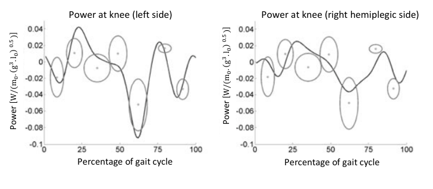
Nhìn chung, các giá trị đỉnh của các đường cong cao hơn tham chiếu đối với chi dưới trái và thấp hơn đối với chi dưới phải, điều này gợi ý sự bù trừ giữa hai chi.
- Công suất tại gối (bên trái)
- Công suất tại gối (bên liệt nửa người phải)
- % chu kỳ dáng đi
- [W/(m₀·(g³·l₀)^0.5)]
- Phần trăm chu kỳ dáng đi
Trong nghiên cứu của chúng tôi, các hồi quy tốt nhất, có tính đến tuổi và tốc độ, thu được cho dữ liệu trong mặt phẳng tiếp tuyến (sagittal). Điều này phù hợp với các kết quả của Stansfield [STA 06]. Các phương pháp khác để đánh giá sự khác biệt giữa dáng đi khỏe mạnh và bệnh lý ở trẻ em đã được đề xuất trong tài liệu [BAK 09, BAR 12, SCH 08], nhưng việc đề xuất “các mục tiêu cần đạt được” dường như là một sự thay thế thú vị từ góc độ đồ họa, cho phép tích hợp các mô-men khớp, điều mà hiếm khi được xem xét. Việc áp dụng phương pháp này cho nhiều ca bệnh lý hơn tất nhiên sẽ là cần thiết để xác nhận tiềm năng lâm sàng của cách tiếp cận này.
Tóm lại, với tổng cộng hơn 100 trẻ em từ 1 đến 7 tuổi và tổng cộng 1,253 thử nghiệm dáng đi, một cơ sở dữ liệu lớn về dáng đi của trẻ em khỏe mạnh đã được xây dựng. Một số cách tiếp cận đã được xem xét để tận dụng cơ sở dữ liệu này. Việc tính đến tốc độ đi lại đã cho phép chúng tôi cập nhật các kết luận về sự trưởng thành của dáng đi ở trẻ nhỏ, khác với tài liệu. Hai “tuổi then chốt” đã được làm nổi bật: 4 và 6 tuổi tương ứng cho sự trưởng thành của khớp cổ chân và khớp hông. Các mô hình hồi quy tính đến tuổi, tốc độ đi lại và tương tác của chúng đã được đề xuất cho tất cả các tham số động học và động lực học của dáng đi để giúp so sánh các “giá trị mục tiêu” với các đỉnh đường cong của trẻ không khỏe mạnh. Các dữ liệu tham chiếu này là duy nhất đối với quần thể trẻ tuổi và kích thước mẫu lớn như vậy.
5.2. Chi trên, đánh giá các cử động chức năng
Sự phát triển của phân tích dáng đi định lượng, đặc biệt cho các ứng dụng lâm sàng, đã dẫn đến sự quan tâm ngày càng tăng giữa các nhà nghiên cứu và bác sĩ lâm sàng đối với việc sử dụng các công cụ này trong phân tích chuyển động của chi trên, đặc biệt ở trẻ em. Thực tế, đo lường các cử động vai dường như thiết yếu cho chẩn đoán và điều trị các bệnh lý [FAY 08], nhưng cũng cho đánh giá các kỹ thuật tái thích nghi [HAN 12] hoặc thậm chí để cải thiện thành tích thể thao [MEY 08]. Tuy nhiên, trong trường hợp chi trên, mọi thứ trở nên phức tạp do sự thiếu vắng một nhiệm vụ chủ đạo – không giống như dáng đi đối với chi dưới – và sự biến thiên lớn tồn tại khi thực hiện các nhiệm vụ hàng ngày có tính đến tính dư thừa của chuỗi động học của chi trên, bao gồm các khớp phức tạp và có tính di động cao như khớp vai.
Một số bài tổng quan tài liệu gần đây về phân tích chuyển động chi trên [JAS 09, KON 09] nhấn mạnh nhu cầu chuẩn hóa các phác đồ và phương pháp được sử dụng để phân tích. Thật vậy, các bài báo này đề cập đến việc sử dụng các phác đồ đo lường rất khác nhau mà không có sự đồng thuận về số lượng hoặc vị trí của các điểm đánh dấu, định nghĩa các hệ tọa độ đoạn khâu và khớp hoặc thậm chí thứ tự của các chuỗi quay được chọn để báo cáo các góc khớp. Các nhiệm vụ được phân tích khá đa dạng: thường thì chúng liên quan đến “vươn tay để nắm” hoặc “vươn tay để chạm”; việc nắm và thao tác các vật thể cũng đã được nghiên cứu cũng như các nhiệm vụ chức năng hơn như đưa tay lên miệng, chạm vào đầu, cho tay vào túi, v.v. Trong hầu hết các trường hợp, vị trí tham chiếu tương ứng với một đối tượng ở tư thế ngồi, nhưng một số đối tượng đứng thẳng trong khi thực hiện các cử động chi trên trong một số nghiên cứu. Sự biến thiên lớn này, cả về phác đồ thực nghiệm và xử lý dữ liệu ghi nhận, làm cho việc tổng hợp các dữ liệu này cực kỳ khó khăn, dù là để đặc trưng hóa các cử động của một quần thể đối tượng khỏe mạnh, hay để so sánh và theo dõi các năng lực chức năng của bệnh nhân.
ISB đã đề xuất các khuyến nghị cho định nghĩa các hệ tọa độ đoạn khâu và khớp được sử dụng cho phân tích chuyển động của chi trên [WU 05]. Tuy nhiên, các cử động vai vẫn cực kỳ khó chuẩn hóa. Thật vậy, phức hợp vai gồm nhiều khớp: khớp ức–đòn (giữa xương ức và xương đòn), khớp mỏm cùng–xương đòn (giữa xương đòn và xương bả vai), khớp bả–vai ngực (giữa xương bả vai và lồng ngực) và khớp ổ chảo–cánh tay (giữa xương bả vai và xương cánh tay). Một số nghiên cứu xem xét phức hợp vai như một tổng thể, bằng cách tham chiếu các phép quay tương đối của cánh tay đối với lồng ngực [PET 07]; tuy nhiên, từ góc độ lâm sàng, thường hữu ích khi đặc trưng hóa riêng các cử động khớp bả–vai ngực và khớp ổ chảo–cánh tay. Trong trường hợp này, việc giám sát xương bả vai bằng các hệ thống phân tích chuyển động không xâm lấn là khó khăn. Phương pháp mỏm cùng [MES 07, ŠEN 10], bao gồm việc đặt một bộ ba điểm đánh dấu, xác định đoạn khâu xương bả vai, gần mỏm cùng để giới hạn các sai số đo lường do mô mềm gây ra; Brochard và cộng sự [BRO 11] đã chỉ ra rằng việc sử dụng hiệu chuẩn kép, tại cả hai vị trí cực trị của chuyển động được phân tích (Hình 5.6), cải thiện thêm độ chính xác của chuyển động xương bả vai, làm cho các kết quả có thể chấp nhận được trong bối cảnh lâm sàng (với sai số bình phương trung bình từ 3 đến 4.5°). Trong bài tổng quan tài liệu của Lempereur và cộng sự về chủ đề này [LEM 14], 19 nghiên cứu đã đánh giá độ chính xác và khả năng lặp lại của sáu phương pháp được thiết kế để giám sát xương bả vai bằng các điểm đánh dấu trên da đã được phân tích và các tác giả này khuyến nghị phương pháp mỏm cùng, chỉ rõ rằng vượt quá mức nâng cánh tay 90°, việc sử dụng hiệu chuẩn bội [PRI 11] cải thiện thêm độ chính xác này.
Một khó khăn khác đối với phức hợp vai là tính di động cao của nó trong mọi mặt phẳng, làm cho việc lựa chọn chuỗi quay không thể khái quát hóa khi nghiên cứu chuyển động của nó. Để phân tích các cử động tổng thể của phức hợp vai, Bonnefoy và cộng sự [BON 10] đã đề xuất, tùy thuộc vào chuyển động được nghiên cứu, ưu tiên một chuỗi mà trục động tương ứng với biên độ chuyển động thấp nhất. Để báo cáo các góc của khớp ổ chảo–cánh tay, ISB [WU 05] khuyến nghị chuỗi YXY được minh họa trong Hình 5.7 (mặt phẳng nâng của xương bả vai quanh trục Y gắn với xương bả vai, tiếp theo là nâng trong mặt phẳng xương bả vai quanh trục động X, và cuối cùng là xoay trong–ngoài quanh trục dọc Y của xương cánh tay). Tuy nhiên, Šenk và cộng sự [ŠEN 06] đã so sánh các chuỗi quay khác nhau trong quá trình thực hiện các cử động phân tích: nâng trong mặt phẳng xương bả vai, gập–duỗi trong mặt phẳng tiếp tuyến và gập trong mặt phẳng nằm ngang (trong mỗi trường hợp, với cánh tay đặt ở tư thế xoay trong, xoay ngoài hoặc trung tính). Nghiên cứu này xác nhận rằng không có chuỗi quay nào cho kết quả thỏa đáng, nghĩa là các biên độ khớp nhất quán với các diễn giải lâm sàng mà không có hiện tượng “khóa gimbal” (gimbal-lock) xảy ra, cho tất cả các chuyển động được thử. Các kết quả cho thấy chuỗi YXY do ISB khuyến nghị gây ra hiện tượng “khóa gimbal” trong hầu hết các chuyển động được thử, trong khi chuỗi quay XZY (nâng trong mặt phẳng xương bả vai quanh trục X của xương bả vai, tiếp theo là gập–duỗi quanh trục động Z và cuối cùng là xoay trong–ngoài quanh trục dọc Y của xương cánh tay) dường như thuận tiện khi phân tích sự nâng trong mặt phẳng xương bả vai.
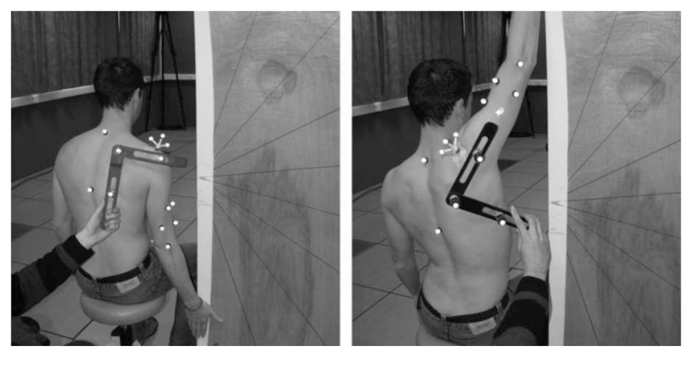
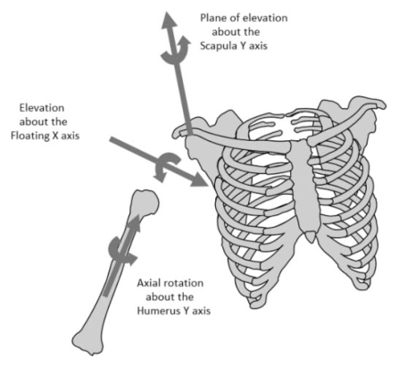
Van Andel và cộng sự [VAN 08] báo cáo các biên độ khớp chủ động cực đại (biên độ chuyển động) và sự tiến hóa của các góc của các khớp khác nhau của chi trên cho 10 đối tượng khỏe mạnh trong quá trình thực hiện một số nhiệm vụ chức năng: chạm vai đối bên bằng tay, đưa tay lên miệng, chải tóc và cho tay vào túi quần sau. Cho việc này, phác đồ được sử dụng dựa trên các khuyến nghị của ISB ngoại trừ các cử động của vai, xét đến các khó khăn chúng ta vừa mô tả. Đối với khớp này, các góc khớp của phức hợp vai được đánh giá như một tổng thể (bằng cách xem xét chuyển động giữa cánh tay và lồng ngực) và thông tin này cũng được bổ sung bằng cách báo cáo các góc khớp của chuyển động xương bả vai đối với lồng ngực. Độ tin cậy trong và giữa các buổi của phác đồ này đã được đánh giá cho 10 trẻ khỏe mạnh [JAS 11b], cũng như cho 12 trẻ mắc bệnh bại não [JAS 11b] từ 6 đến 15 tuổi. Các so sánh kết quả thu được cho 20 trẻ mắc bệnh bại não với nhóm đối chứng gồm 20 trẻ khỏe mạnh cùng tuổi [JAS 11a] xác nhận rằng thời gian chuyển động dài hơn và các quỹ đạo kém trực tiếp hơn ở trẻ không khỏe mạnh, điều cũng huy động thêm thân mình của chúng. Trẻ không khỏe mạnh cũng được đặc trưng bởi vị trí ban đầu bị thay đổi của xương bả vai, với sự tăng độ xô ra trước (protraction) 7–10°. Các khác biệt quan sát được cho các khớp khác nhau cho thấy các chiến lược bù trừ ở các đối tượng không khỏe mạnh, chẳng hạn như tăng gập ở khuỷu tay và cổ tay và sự ngửa (supination) bị thay đổi của cẳng tay.
Các tác giả khác [LEM 12] đã đề xuất và đánh giá, cho một nhóm 10 trẻ khỏe mạnh và 10 trẻ mắc bệnh bại não, một phác đồ hơi khác cho phép đánh giá các cử động của khớp ổ chão–cánh tay, sử dụng chuỗi XZY do Senk và cộng sự khuyến nghị [ŠEN 06]. Các kết quả của nhóm này [BRO 12] cho thấy vai trò then chốt của khớp bả–vai ngực trong việc định vị kém của cánh tay khi nghỉ và trong khi chuyển động, trong khi khớp ổ chão–cánh tay có vẻ giới hạn các biên độ cử động cánh tay theo một số hướng nhưng bù trừ cho các bất thường trong vị trí ban đầu của xương bả vai.
Gần đây, các chỉ số tổng hợp đã được giới thiệu để định lượng mức độ nghiêm trọng của sự thiếu hụt trong chức năng của chi trên ở các đối tượng không khỏe mạnh. Như vậy, Jaspers và cộng sự [JAS 11b] trình bày một biến thể của “Điểm Hồ sơ Dáng đi” (Gait Profile Score) [BAK 09], “Điểm Hồ sơ Cánh tay” (Arm Profile Score), tương ứng với căn bậc hai của hiệu giữa dữ liệu động học đo được cho một trẻ không khỏe mạnh và các giá trị trung bình đo được ở trẻ khỏe mạnh, và thử nghiệm lợi ích của nó trong một nhóm 20 trẻ bị liệt nửa người. Butler và cộng sự [BUT 12] đã đề xuất “Chỉ số Chuyển động Chi trên Nhi khoa” (Pediatric Upper Limb Motion Index) được tính từ tám biến động học cho một chu kỳ vươn và nắm, mà họ đã thử nghiệm trên một nhóm 25 trẻ mắc bệnh bại não.
Từ góc độ triển vọng, có vẻ hữu ích khi cố gắng thiết lập các giá trị chuẩn cho các nhiệm vụ chức năng khác nhau và cho mỗi nhóm tuổi, và thử nghiệm tính thích hợp của các chỉ số lâm sàng khác nhau đối với các tình trạng khác ảnh hưởng đến chức năng của chi trên, chẳng hạn như liệt nửa người, bệnh thất điều Friedreich hoặc thậm chí đám rối thần kinh cánh tay.
5.3. Tính di động của một cột sống cổ khỏe mạnh
Có nhiều nghiên cứu in vivo về tính di động ba chiều của cột sống cổ ở các đối tượng khỏe mạnh. Một số sử dụng một góc kế cụ thể, Thiết bị Đo Biên độ Cột sống Cổ (Cervical Range of Motion), và cung cấp các biên độ của các cử động chính, với độ tái lập tốt, trên các quần thể lớn [NIL 96, YOU 92]. Tuy nhiên, để có một phân tích thực sự ba chiều, mô tả đặc biệt sự ghép nối qua lại giữa gập nghiêng bên và xoay trục, các thiết bị khác phải được sử dụng. Hình ảnh y tế – chụp CT [SAL 13], MRI [TAK 11], tia X stereo [ROU 11] – có nhược điểm là dựa phân tích trên các tư thế tĩnh cực trị, không tái tạo đúng sự phối hợp của chuyển động thực tế được quan sát [TSA 13]. Các thiết bị điện từ như Bộ Phân tích Chuyển động Cột sống (Spine Motion Analyzer) [FEI 99], siêu âm [DEM 07] hoặc thậm chí các thiết bị quang điện tử [FER 02, SFO 02] cũng được sử dụng để giám sát chuyển động của cột sống cổ. Tuy nhiên, rất khó để tổng hợp các kết quả của tất cả các nghiên cứu này do sự đa dạng của các phác đồ thực nghiệm và phương pháp tính toán được sử dụng.
5.3.1. Vật liệu và phương pháp
Mục tiêu của nghiên cứu được mô tả ở đây, vốn là một phần của luận án tiến sĩ của Luc Boussion [BOU 08], là một phân tích tính di động ba chiều của cột sống cổ ở các đối tượng khỏe mạnh bằng cách sử dụng một phác đồ thực nghiệm nguyên bản khai thác hệ thống Motion Analysis® với các điểm đánh dấu thụ động. Một ghế có thể điều chỉnh giúp định vị các đối tượng ở tư thế ngồi, với sự hỗ trợ lưng dưới và đai buộc khung chậu. Một thiết bị có giá đỡ điều chỉnh theo chiều dọc (để căn chỉnh tâm của nó với trục thị giác) được đặt cách ghế 0.65 m. Giá đỡ này được trang bị các ống có hình dạng khác nhau, được gắn một dây mảnh phát sáng ở trung tâm, vạch ra quỹ đạo mà đầu phải đi theo cho các chuyển động khác nhau được phân tích. Kính chuyên dụng chặn thị giác ngoại vi để loại bỏ sai lệch liên quan đến sự thích nghi hoặc bù trừ của các cử động mắt khi đi theo các quỹ đạo quy định.
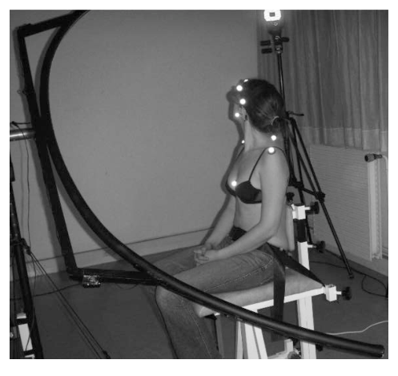
Quần thể bao gồm 42 tình nguyện viên từ 20 đến 55 tuổi (21 nữ và 21 nam) không có bệnh lý cột sống cổ, bao gồm cả tiền đình và mắt, đau hoặc tác dụng phụ của phẫu thuật có thể ảnh hưởng đến hiệu suất trong các bài kiểm tra.
Một khi đối tượng được thiết lập trên ghế, người vận hành cung cấp một mũ đầu dễ dàng điều chỉnh được trang bị năm điểm đánh dấu phản chiếu. Khi mũ đầu được định vị, mặt phẳng được tạo bởi các điểm đánh dấu được căn chỉnh với trục thị giác. Một điểm đánh dấu được cố định trên một núm tai đặt trên mỏm chũm; các điểm khác được cố định trên các mỏm gai T3 và T6 và trên mỗi mỏm cùng. Một điểm đánh dấu khác được cố định vào xương ức và điểm đánh dấu cuối cùng được định vị trên cột sống ngực, trong một mặt phẳng nằm ngang chứa điểm đánh dấu ức. Sự căn chỉnh các điểm đánh dấu ức và ngực dưới được thực hiện bằng một la bàn ngực được trang bị mức thủy, đảm bảo định nghĩa trục trước–sau nằm ngang gắn với lồng ngực cho mỗi đối tượng.
Các chuyển động được phân tích là các cử động đơn giản gập/duỗi đầu, gập nghiêng bên phải và trái, xoay phải và trái. Các chuyển động được thực hiện theo cùng một thứ tự cho tất cả các đối tượng. Các đối tượng thực hiện 10 chu kỳ cho mỗi chuyển động, ở biên độ cực đại và ở tốc độ mà họ thích.
Một hệ tọa độ trực chuẩn “mũ đầu” được định nghĩa với trục Zc vuông góc với mặt phẳng các điểm đánh dấu hướng lên, trục Yc nằm trong mặt phẳng các điểm đánh dấu, hướng về phía trước và trục Xc hướng sang phải. Đối với hệ tọa độ “Lồng ngực”, trục Yt nối điểm đánh dấu trên T6 và điểm đánh dấu ức, theo cấu tạo, là nằm ngang và hướng về phía trước. Trục Xt được xây dựng vuông góc với mặt phẳng được tạo bởi các điểm đánh dấu T3, T6 và trục Yt, hướng sang phải. Trục Zt hoàn thiện hình tam diện thuận và hướng lên. Chuyển động tương đối của đầu đối với lồng ngực được mô tả bằng cách chia ma trận quay giữa hai đoạn khâu thành ba phép quay sơ cấp liên tiếp (xem Chương 3), như được ISB khuyến nghị [WU 02, WU 05], tuy nhiên mô tả chuyển động của cột sống cổ, tức là của đầu đối với lồng ngực, không được chuẩn hóa. Thứ tự được chọn cho chuỗi là X, Y, Z. Phép quay đầu tiên tương ứng với một chuyển động gập/duỗi quanh trục Xt, gắn với hệ tọa độ Lồng ngực. Phép quay thứ hai xảy ra quanh trục động Y, được định nghĩa tại mỗi thời điểm là đường vuông góc chung với hai trục chuyển động khác. Phép quay này được diễn giải là gập nghiêng bên. Phép quay thứ ba xảy ra quanh trục Zc, gắn với mũ đầu và tương ứng với một sự xoay phải và trái. Vị trí trung tính (góc bằng không) được định nghĩa bởi tư thế được đối tượng tự nhiên áp dụng ở đầu mỗi chuyển động (trục thị giác căn giữa).
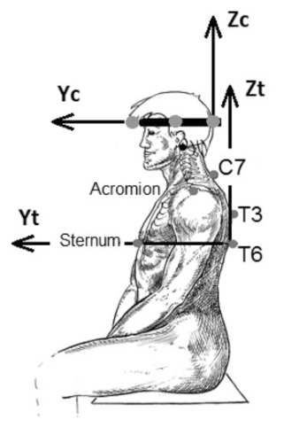
Để định lượng các chuyển động bù trừ của vai, các đại lượng sau cũng được tính toán:
- góc gập nghiêng bên của vai như là góc giữa trục hai mỏm cùng và trục Xt trong phép chiếu lên mặt phẳng trán của lồng ngực (Xt, Zt);
- góc xoay của vai như là góc giữa trục hai mỏm cùng và trục Xt trong phép chiếu lên mặt phẳng nằm ngang của lồng ngực (Xt, Yt).
Các bảng dưới đây trình bày các biên độ cực đại của các góc khác nhau theo các khía cạnh:
- giá trị trung bình cho tất cả các đối tượng của các giá trị trung bình được tính qua 10 chu kỳ liên tiếp cho mỗi đối tượng;
- độ lệch chuẩn trung bình được tính qua 10 chu kỳ của chuyển động do mỗi đối tượng thực hiện (cho độ tái lập của cùng một chuyển động đối với đối tượng đã cho): SD1;
- độ lệch chuẩn của các biên độ cực đại đo được trên tất cả các đối tượng (cho sự biến thiên của các biên độ cực đại này đối với một chuyển động đơn): SD2.
5.3.2. Kết quả và thảo luận
Các biên độ trung bình (được biểu diễn bằng độ), các độ lệch chuẩn khác nhau (được biểu diễn bằng độ và theo phần trăm), các biên độ cực tiểu và cực đại (được biểu diễn bằng độ) cho mỗi chuyển động đơn giản (gập–duỗi, gập nghiêng bên phải và trái và xoay phải và trái) được trình bày trong Bảng 5.1.
Bảng 5.1. Các biên độ chuyển động trung bình (đơn vị °), độ lệch chuẩn (đơn vị ° và %) và các giá trị cực tiểu và cực đại của mỗi chuyển động đơn giản.
| Chuyển động | Biên độ toàn phần | SD 1 | SD 2 | Cực tiểu – Cực đại |
|---|---|---|---|---|
| Biên độ toàn phần gập–duỗi | 120.65° | 6.46° – 5.43% | 15.04° – 12.47% | 90.52° – 147.01° |
| Biên độ toàn phần gập nghiêng bên | 66.60° | 8.56° – 17.37% | 23.45° – 35.21% | 2.89° – 116.21° |
| Biên độ toàn phần xoay trục | 155.35° | 7.93° – 6.13% | 15.22° – 9.8% | 116.97° – 183.12° |
Có sự biến thiên cao trong việc thực hiện gập nghiêng bên, với sự bù trừ bằng gập nghiêng bên và xoay trục của phức hợp bả–vai ngực, điều dẫn chúng tôi đến xem xét rằng gập nghiêng bên của cột sống cổ đặc biệt khó đánh giá.
Các chuyển động gập và xoay được ghép nối với xoay và gập tương ứng, do đó lượng các chuyển động ghép nối trong các chuyển động sơ cấp được trình bày. Hơn nữa, dựa trên nguyên lý rằng vai độc lập về mặt giải phẫu với lồng ngực, các chuyển động liên quan đến vai trong các chuyển động sơ cấp cũng được định lượng. Các Bảng 5.2 và 5.3 nhóm lại các kết quả này cho gập nghiêng bên và xoay trục.
Bảng 5.2. Các biên độ chuyển động trung bình (đơn vị ° và %), độ lệch chuẩn (đơn vị ° và %) và các giá trị cực tiểu và cực đại của các chuyển động ghép nối với gập nghiêng bên (N = 42, chuyển động sơ cấp: gập nghiêng bên).
| Chuyển động ghép nối | Giá trị (°) | % của gập nghiêng bên | SD 1 | SD 2 | Cực tiểu – Cực đại |
|---|---|---|---|---|---|
| Gập/duỗi | 8.79° | 13.20% | 12.37° – 140.73% | 7.52° – 85.55% | 3.62° – 34.95° |
| Xoay trục | 46.9° | 70.42% | 6.67° – 14.22% | 22.84° – 48.70% | 19.22° – 117.34° |
| Gập nghiêng bên của vai | 4.37° | 6.56% | 0.70° – 16.01% | 2.26° – 51.72% | 0.62° – 10.22° |
Bảng 5.3. Các biên độ chuyển động trung bình (đơn vị ° và %), độ lệch chuẩn (đơn vị ° và %) và các giá trị cực tiểu và cực đại của các chuyển động ghép nối với xoay trục (N = 42, chuyển động sơ cấp: xoay trục).
| Chuyển động ghép nối | Giá trị (°) | % của xoay trục | SD 1 | SD 2 | Cực tiểu – Cực đại |
|---|---|---|---|---|---|
| Gập/duỗi | 13.86° | 8.92% | 1.92° – 13.85% | 5.19° – 37.45% | 2.71° – 27.88° |
| Gập nghiêng bên | 21.38° | 13.76% | 1.85° – 8.65% | 8.21° – 38.40% | 6.53° – 39.70° |
| Xoay trục của vai | 4.85° | 3.12% | 0.60° – 12.37% | 2.53° – 52.16% | 1.22° – 13.26° |
Mặc dù các bậc thang độ lớn nói chung đã thu được, rất khó để so sánh các kết quả này với những kết quả trong tài liệu, do các phương tiện thực nghiệm và phương pháp tính toán khác nhau. Hơn nữa, [WAL 96] đã chỉ ra ảnh hưởng của tư thế đầu lên các biên độ chuyển động đo được của cột sống cổ. Tuy nhiên, các kết quả này cho thấy điều quan trọng là phải phân biệt sự tham gia của phức hợp bả–vai ngực trong tính toán các chuyển động ghép nối trong mặt phẳng trán và nằm ngang.
Tóm lại, nghiên cứu này mô tả một phác đồ thực nghiệm nguyên bản định lượng tính di động của cột sống cổ trong các mặt phẳng tiếp tuyến, trán và nằm ngang, cả để đánh giá biên độ của các chuyển động sơ cấp cũng như của các chuyển động liên quan. Phác đồ này có ưu điểm khắc phục các sai lệch đo lường liên quan đến các chuyển động bù trừ của phức hợp bả–vai ngực cũng như tính di động của mắt trong việc định lượng các chuyển động của cột sống cổ. Phác đồ thực nghiệm này sau đó sẽ được sử dụng để nghiên cứu các nhóm không khỏe mạnh khác: bệnh nhân bị chấn thương đánh roi (whiplash), cứng khớp (arthrodesis), dụng cụ thay thế (prosthesis), v.v.
5.4. Các thay đổi trong động học ba chiều của gối liên quan đến viêm khớp khoang trong
Các chuyển động chức năng của một khớp gối chịu trọng lượng khó được định lượng một cách đủ chính xác để cho phép một phân tích thích hợp về các thay đổi động học do một bệnh lý gây ra. Thật vậy, sử dụng các hệ thống phân tích chuyển động không xâm lấn (xem Chương 2), chúng tôi đã thấy rằng có những sai số đáng kể trong đánh giá này liên quan đến các chuyển động bất thình lình của mô mềm, đặc biệt ở đùi, và với sự trượt của da xung quanh khớp (xem Chương 4). Gần đây, các nghiên cứu sử dụng tái tạo ba chiều của hai hình ảnh huỳnh quang giúp đánh giá động học của gối trong một số tình huống với độ chính xác cao – sai số nhỏ hơn 0.4 ± 0.9° và 0.4 ± 0.4 mm [LI 08]; tuy nhiên, công cụ này vẫn xâm lấn và không thể thực hiện các phân tích lâm sàng dựa trên phác đồ này.
Để giới hạn các sai số liên quan đến nhiễu mô mềm (soft tissue artifact) trong khi tiếp tục sử dụng một phác đồ không xâm lấn, các đai đeo được thiết kế đặc biệt để phân tích động học của gối đã được phát triển bởi Phòng thí nghiệm Nghiên cứu Hình ảnh và Chỉnh hình (LIO) tại Montreal, từ năm 1992. Độ chính xác của việc theo dõi các chuyển động của xương bên dưới bởi loại thiết bị này đã được đánh giá bằng cách so sánh động học thu được từ các điểm đánh dấu bên ngoài được cố định vào thiết bị này và động học thu được bằng huỳnh quang đã hiệu chuẩn cho sự gập đến 65° [SAT 96]. Sai số trung bình là 0.4° trong varus–valgus, 2.3° trong xoay trục và 2.4 mm trong dịch chuyển trước–sau.
Hiệu chuẩn tư thế và chức năng (được mô tả sau) đã được phát triển để xác định, bằng thiết bị này, các trục giải phẫu mà trên đó các tham số động học được tính toán. Nhiều nghiên cứu đã được thực hiện để xác minh độ tái lập của các phép quay và dịch chuyển của gối được đánh giá theo cách này. Hagemeister và cộng sự [HAG 05] báo cáo một sai số trung bình trong độ lặp lại nhỏ hơn 0.8° cho tất cả các phép quay và 2.2 mm cho dịch chuyển trước–sau (0.4° và 0.8 mm tương ứng, giữa các người vận hành) cho 15 đối tượng và 3 người vận hành. Một nghiên cứu thứ hai [LAB 08] cũng xác minh độ tái lập khi thiết bị được định vị lại một cách có hệ thống trên đối tượng trước khi thực hiện các phép đo mới trên 15 đối tượng và 3 người vận hành. Trong trường hợp này, các hệ số tương quan nội lớp biến thiên từ 0.88 đến 0.94. Do các kết quả tốt này, kết hợp với tiềm năng lâm sàng cao của việc đánh giá khách quan động học gối trong chuyển động [LUS 12], thiết bị này đã được thương mại hóa dưới tên KneeKG™.
Nghiên cứu được trình bày trong phần này nhằm mô tả các sửa đổi ba chiều của động học gối trong dáng đi ở những bệnh nhân mắc bệnh viêm khớp gối (gonarthrosis), sử dụng hệ thống KneeKG™. Nó tổng hợp một phần công trình trong luận án tiến sĩ của D. Bytyqi [BYT 14].
5.4.1. Vật liệu và phương pháp
Viêm khớp gối (gonarthrosis), hay viêm xương khớp của gối, là nguyên nhân phổ biến nhất gây đau gối sau tuổi 50. Nó tương ứng với sự mòn sớm của sụn bảo vệ khớp, gây ra các khó khăn khi đi lại. Hầu hết các nghiên cứu về các sửa đổi dáng đi ở bệnh nhân viêm khớp gối tập trung vào các tham số không gian–thời gian [DE 12, ORN 10], cho thấy rằng những bệnh nhân này đi chậm hơn, với độ dài bước chân giảm và pha đứng đơn giản bị rút ngắn so với nhóm đối chứng. Một số nghiên cứu báo cáo các sửa đổi động học trong suốt chu kỳ dáng đi ở mặt phẳng tiếp tuyến, đề cập đến sự giảm biên độ gập và sự gập cực đại của gối trong pha đứng cũng như sự tăng gập của gối khi gót chạm đất [AST 08, MUN 05, ZEN 09]. Tuy nhiên, các thay đổi của động học trong các mặt phẳng khác, các tham số bị ảnh hưởng nhiều hơn bởi sai số đo lường, vẫn rất mơ hồ trong tài liệu, đó là lý do đằng sau nghiên cứu này.
Đây là một nghiên cứu tiền cứu, được thực hiện trên 30 bệnh nhân (18 nữ và 12 nam, tuổi trung bình 65.7 tuổi) có chẩn đoán varus gối với viêm khớp khoang trong, có kế hoạch phẫu thuật thay khớp. Quãng đường đi lại của hầu hết các bệnh nhân này ít hơn 1 km, và mức độ nghiêm trọng của tình trạng của họ được phân loại từ giai đoạn II đến giai đoạn IV của thang đo X-quang Ahlbäck [AHL 68]. Một nhóm 12 đối tượng đối chứng với hình thái varus, tương tự về tuổi, cũng được đưa vào.
Phác đồ thực nghiệm ban đầu làm quen đối tượng với việc đi trên máy chạy bộ; tốc độ đi lại thoải mái được thiết lập trong thời gian này. Sau đó, người vận hành gắn các thiết bị hông, xương đùi và xương chày vào đối tượng. Vị trí của ba điểm đỡ của đai đeo xương đùi được điều chỉnh cẩn thận, giữa các cấu trúc gân ở hai bên khớp gối, để đảm bảo giám sát tối ưu chuyển động của xương.
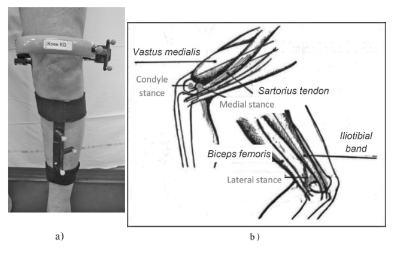
Mỗi thiết bị được trang bị ba điểm đánh dấu phản chiếu, giúp tái tạo vị trí của chúng trong không gian bằng hệ thống Optotrak™. Sau đó, hiệu chuẩn được thực hiện, trong đó người vận hành xác định vị trí (bằng một con trỏ được trang bị các điểm đánh dấu phản chiếu) các lồi cầu trong và ngoài cũng như các mắt cá trong và ngoài của chi dưới được phân tích. Đối tượng được trang bị các thiết bị này và vị trí của con trỏ được ghi đồng thời trong không gian đo lường của hệ thống, và do đó có thể biểu diễn tọa độ của tất cả các điểm trong cùng một hệ tọa độ tham chiếu. Tâm của các mắt cá định nghĩa tâm khớp cổ chân, gốc của hệ tọa độ giải phẫu liên kết với xương chày. Để định nghĩa tâm khớp hông, gốc của hệ tọa độ giải phẫu liên kết với xương đùi, đối tượng thực hiện sự vòng ngoài (circumduction) của hông. Bằng cách ghi lại chuyển động tương đối của khung chậu và các thiết bị xương đùi trong quá trình vòng ngoài này, tâm khớp hông được tính bằng một thuật toán điểm tựa (pivot point algorithm) [SIS 06]. Để định nghĩa tâm khớp gối, đối tượng chủ động thực hiện gập/duỗi gối, không vượt quá 60° gập, và trục quay trung bình của chuyển động được tính. Điểm giữa của các lồi cầu đùi sau đó được chiếu vuông góc lên trục này, và điểm mới này định nghĩa tâm gối. Các tâm của các khớp này giúp định nghĩa các trục dọc của các hệ tọa độ giải phẫu của xương đùi (trục nối tâm gối và tâm khớp hông) và xương chày (trục nối mắt cá và tâm khớp gối). Tiếp theo, với đối tượng ở tư thế đứng, hướng về trục dáng đi, các chuyển động nhỏ từ quá duỗi gối đến gập 10° được thực hiện. Vị trí “trung tính” của gối được phát hiện từ sự căn chỉnh tốt nhất của hai trục dọc trong mặt phẳng tiếp tuyến, và sự xoay trục được giả định bằng không ở vị trí này, giúp hoàn thiện các hệ tọa độ giải phẫu liên kết... với mỗi xương. Sau giai đoạn hiệu chuẩn, đối tượng đi trên máy chạy bộ ở tốc độ thoải mái, và các điểm đánh dấu gắn trên các thiết bị xương đùi và xương chày được ghi lại trong 45 s. Sau khi ghi, người vận hành có thể trực quan hóa kết quả trên màn hình máy tính. Các chu kỳ dáng đi được tự động phát hiện, và các đường cong biểu diễn các góc gập/duỗi, dạng/co, xoay trong/ngoài và dịch chuyển trước–sau của gối cho tất cả các chu kỳ được vẽ đồ thị. Các tham số động học của gối được tính toán theo như Grood và Suntay đề xuất [GRO 83] (xem Chương 3). Cụ thể, “dịch chuyển” ở đây tương ứng với chuyển động tương đối giữa điểm liên kết với xương đùi trùng với tâm khớp gối ở vị trí “trung tính”, và điểm liên kết với xương chày trùng với tâm khớp gối ở vị trí “trung tính”.
Phác đồ thực nghiệm này đã được áp dụng cho các đối tượng trong cả hai nhóm, và các đặc điểm động học được so sánh giữa hai nhóm bằng Phân tích Phương sai (ANOVA). Các tương quan Pearson (r) cũng đã được sử dụng để xem xét các mối quan hệ giữa các tham số cơ sinh học và lâm sàng của dáng đi ở bệnh nhân. Sự khác biệt thống kê được đặt ở p < 0.05.
5.4.2. Kết quả và thảo luận
Các kết quả được tổng hợp trong Bảng 5.4.
Bảng 5.4. Các tham số không gian–thời gian và động học cho nhóm bệnh nhân (OA) và nhóm đối chứng (sửa đổi theo [BYT 14]).
| Đặc điểm động học | Nhóm bệnh nhân gối OA | Nhóm đối chứng | Ý nghĩa |
|---|---|---|---|
| Tốc độ (km/h) | 1.2 (0.3) | 2.1 (0.2) | p < 0.05 |
| Góc gập tại tiếp xúc ban đầu | 19° (7.7) | 17.4° (12.5) | p > 0.05 |
| Gập cực đại trong pha đứng | 22.4° (8.1) | 28.1° (8) | p < 0.05 |
| Duỗi cực đại trong pha đứng | 7.6° (4.1) | 2.2° (4) | p < 0.05 |
| Gập cực đại trong pha lắc | 48.2º (6.3) | 54.4° (5.3) | p < 0.05 |
| Duỗi cực đại trong pha lắc | 15° (6.5) | 12.5° (6.7) | p > 0.05 |
| Biên độ gập–duỗi | 40.6° (6.1) | 52.2° (5.3) | p < 0.05 |
| Góc dạng (+) / nghiêng (-) tại tiếp xúc ban đầu | 5.7° (7.3) | -0.4° (2.8) | p < 0.05 |
| Biên độ dạng–nghiêng | 7.7° (5) | 5.5° (1.6) | p > 0.05 |
| Góc xoay trong (-) / ngoài (+) tại tiếp xúc ban đầu | 0.3° (3.6) | -0.1° (2.4) | p > 0.05 |
| Biên độ xoay trong–ngoài | 7.58° (3.1) | 9.35° (2.41) | p < 0.05 |
| Dịch chuyển trước–sau của xương chày tại tiếp xúc ban đầu (mm) | -2.9 (5.4) | 0.4 (2.21) | p < 0.05 |
| Biên độ dịch chuyển trước–sau (mm) | 7.9 (4.13) | 9.3 (4.41) | p > 0.05 |
Các kết quả cho thấy bệnh nhân có sự không ổn định trong mặt phẳng trán (sự tăng góc dạng trong suốt chu kỳ, tương quan với độ lệch varus của họ), và một sự hạn chế về biên độ và đỉnh gập trong mặt phẳng tiếp tuyến, điều đã được quan sát trước đây [NAG 12]. Các kết quả của nghiên cứu này cũng cho thấy sự giảm biên độ của xoay trục, sự xoay trong của gối trong pha đứng hầu như không tồn tại ở bệnh nhân (xem Hình 5.11).
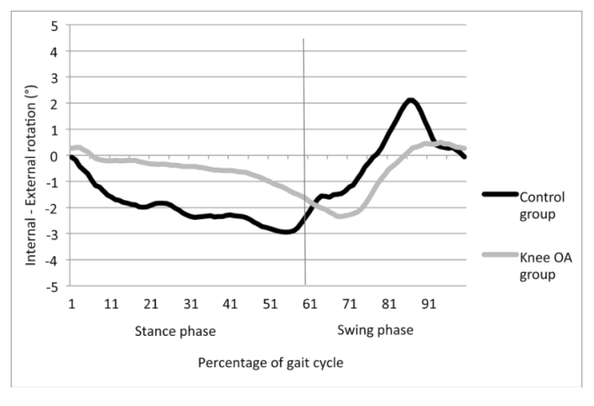
Bệnh nhân cũng có sự dịch chuyển ra sau lớn hơn (dịch chuyển của xương chày ra sau xương đùi) so với nhóm đối chứng, đặc biệt trong pha đứng (xem Hình 5.12).
Như vậy, nghiên cứu này cung cấp bằng chứng khách quan cho các biến đổi động học của gối trong dáng đi, đặc biệt là những biến đổi trong cơ chế “vít–về–nhà” (screw-home) của gối ở nhóm bệnh nhân. Trong tương lai, phân tích chức năng sau thay khớp (postarthroplasty) của gối sẽ cho phép chúng ta hiểu liệu các sửa đổi được mô tả có thể dự đoán động học của gối nhân tạo hay động học gối có xu hướng trở về bình thường sau khi thay khớp.
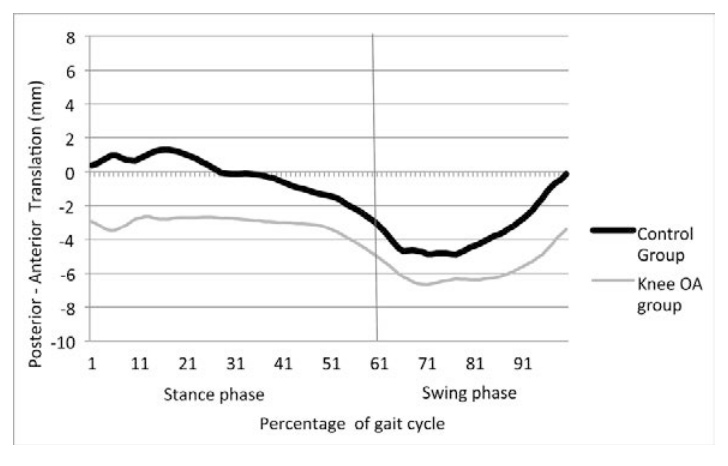
Chương này đã trình bày các ứng dụng khác nhau của phân tích chuyển động, để đánh giá tốt hơn tầm quan trọng của việc thiết lập một phác đồ thực nghiệm nghiêm ngặt, thích ứng với ứng dụng dự kiến. Phác đồ này phải cho phép độ tái lập và độ chính xác tối đa, đồng thời vẫn nằm trong các thời gian thu thập và xử lý dữ liệu quy định cho bối cảnh này, để giới hạn sai lệch sao cho các tham số từ dữ liệu thực nghiệm này đủ liên quan để trả lời câu hỏi lâm sàng được đặt ra.